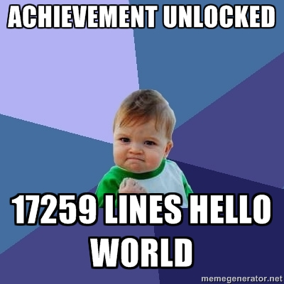
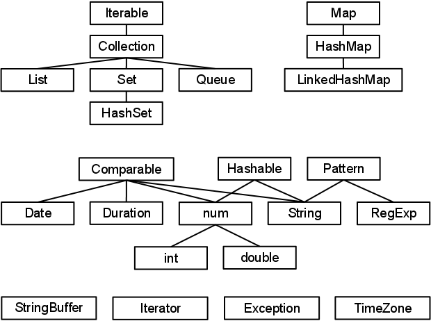

Jørgen Jervidalo
Faggruppemøte 20. oktober 2011
Jørgen Jervidalo
Faggruppemøte 20. oktober 2011
jervi.github.com/dart
github.com/jervi/dart

This looks like Java for Javascript, if that makes any kind of sense.
var
num, int, double, bool // interfaces

null